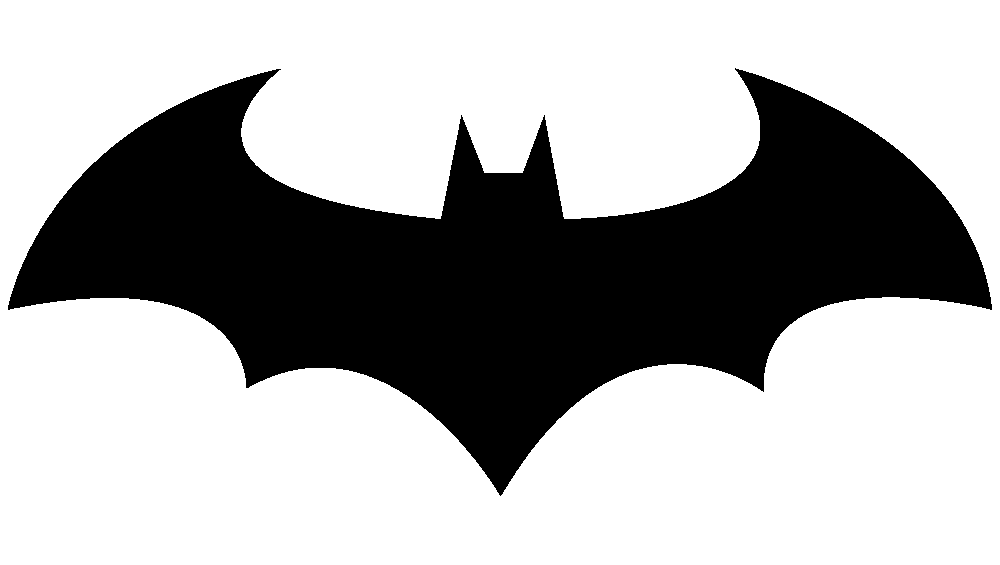

Tudo aquilo que você sempre quis saber sobre o BATMAN!

Batman's history...
Batman é um dos super-heróis mais icônicos da cultura pop. Ele foi criado em 1939 por Bob Kane e Bill Finger, e desde então, tornou-se um dos personagens mais populares e influentes dos quadrinhos, filmes, TV e jogos.
A história do Batman começa quando o jovem Bruce Wayne, filho de Thomas e Martha Wayne, testemunha o assassinato de seus pais por um ladrão de rua. Determinado a combater o crime e a injustiça, Bruce decide dedicar sua vida a treinar seu corpo e mente para se tornar o Cavaleiro das Trevas, o Batman.
O Batman é um vigilante mascarado que patrulha a cidade de Gotham, lutando contra uma variedade de vilões, incluindo o Coringa, o Pinguim, a Mulher-Gato, o Charada e muitos outros. Ele é ajudado por uma série de aliados, incluindo seu mordomo Alfred, seu parceiro Robin e outros membros da família Batman, como Batgirl e Asa Noturna.
Ao longo dos anos, a história do Batman foi reinventada e reimaginada várias vezes em quadrinhos, filmes, TV e jogos. Algumas das histórias mais icônicas do Batman incluem "A Piada Mortal" de Alan Moore e Brian Bolland, "O Cavaleiro das Trevas" de Frank Miller, e "Ano Um" de Frank Miller e David Mazzucchelli.
O Batman continua sendo um dos personagens mais populares da cultura pop, e sua história continua a inspirar e fascinar fãs em todo o mundo.